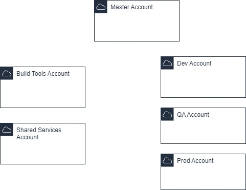

SCC
Brasil
os cloud gurus
Software Cloud Consulting
Your software development, cloud, consulting & shoring company
AWS Multi Account Setup
By Wolfgang Unger
Introduction
Maybe you still run all of your AWS Services in just one account?
This is of course possible, but this is not recommended and you should consider distributing
your
services in various accounts.
Lets have a look on strategies to implement this in this blog.
First let's have a look on the benefits of the usage of various accounts instead of just
one.
Better access control and implementation of the principle of least privilege.
You can of control access to resources for IAM users also in just account, but this is going to be much more complicated as for separate accounts.You will have to define fine-granular policies with explicite defined resources or deny statements.
If you separate your stages, for example Dev, QA and Prod you can control much easier who can access each stage with the defined roles per account.
For example for the Dev Accounts all Developers can have PowerUser rights, but you don't want this for the production account.
In Production just your Seniors and DevOps got PowerUser or Write Rights, others got just a ReadOnly Role to access log files.
This way you reduce the risk, somebody deletes your production resources inadvertently.
You have dedicated account for backup of sensitive Data?
Define only the users who should be able to access the data in your Role to access this account, instead of writing complicated access policies in one account.
Isolation of your stage environments
Of course you could run 3 stages in just one account.You could create 3 VPCs, for each stage one or even let your services run in just one VPC.
But this approach brings also some risks.
Imagine your application got environments variables to define some parameters like the DB Host or connection String to connect.
For you Dev Application the value might be : dev.connection-string
For Prod it is : prod.connection-string
Now one of your developers make changes on the environments properties for Dev and makes a little copy & paste error ( of course just in theory, these things never happen for real) and changes dev.connection-string to prod.connection-string.
Your Dev Database is a snapshot of your Production DB, so this will not be noticed immediately, when the Dev Application connects to the Prod Database.
If you have isolated your environments, an error would occur and you will detect the error in a second and no data can be compromised.
But if your environments are not isolated, the Dev Application will connect to the production Database and developers will make some changes, believing they work on the Dev Database. They might edit data or in worst case delete data or a whole table.
You don't want this to happen!
The DB is just an example, you could connect to the wrong APIs, microservices and so on.
Group workloads on business and ownership
In a bigger company it makes also sense to group your workloads to different accounts by business purpose or ownership.Each development team got their own Stage accouns for their applictions.
Isolation of business units can help them operate with greater decentralized control, but still provides the ability for you to provide overarching guardrails.
Better cost control
By the separation per business purpose or teams comes one more advantage:In addition to cost reporting at the account level, AWS has built-in support to consolidate and report costs across your entire set of accounts.
When you require fine-grained cost allocation, you can apply cost allocation tags to individual resources in each of your accounts.
Promote innovation and agility
By setting up a sandbox account to develop new services or POCs you allow your developers experiment with new services without causing harms to your stage environments.Also you can easily track the costs for this account by consolidated billing, much better as in just one account.
Problems with service quotas
Each service in AWS got service quotas, which are valid for one account. For example Running On-Demand X instances is 28. If you run all your services and stages in just one account you will reach these quotas much faster. In this can have a negative impact on your prod environment.Lets think you have your client facing business application set up with auto-scaling.
Normally running 10 instances, but when more customers are accessing the application, for example on Black Friday, the app might scale out to 20 instances.
Now your developers run some load tests against the Dev servers and scale this environment up for these tests. You reach the service quota for your instances, but your prodcution environment is still running with the desired count of 10.
Since a lot of customers are accessing your application to buy your products, the prod application servers are trying to scale out now, but they can't because you already reached the service quota.
Your customers will face a bad user experience with the application and you will lose money.
Also errors with service quotas are not easy to find.
The quotas are normally the last option were develpers search for a problem, when for example auto-scaling does not work as expected.
Define your Multi Account Setup
Now it's time to define your multi account infrastructure, so how many accounts are you going to need?This depends of course a lot of the size of your company, number of your business units, applications you run at AWS, but let's try to find a answer in a generic approach.
I recommended you also take a look into the AWS documentation and whitepaper for mulitple AWS Accounts
Lets have a look on a example Setup Scenario from this documentation
We see here the following accounts:
-AWS Organizations Account ( or Master Account)
-Shared Services Account
-Log Archive Account
-Security Account
-Network Service Account
Well actually on this diagram are Stage Accounts for business unit applications missing, but it we can start with this.
In the new documentation AWS introcuces even more account types, but if you don't plan for an international enterprise, we will be fine with those we got so far.
Lets describe the most important types of accounts, this way you should be able to define your account setup depending on your use case.
AWS Organizations Account or Master Account
This is your main account were you also define your organizal structure and accounts. You can do this in AWS Organizations, see the next chapter on this.Also your IAM users are defined here, for the other accounts you will use roles and do a switch role.
For each account you can define roles with the users you want to grant access and also exactly define what they should be able to do.
Also in this account is your consolidated billing. With cost allocation tags you can seperate your resources by accounts, workloads or projects.
Keep permisssions restricted for this account, your users basically just need to login and then switch role to the account, they have to work with.
You should not run any workloads or services in this account.
Stage Accounts
These are n accounts were you run your business application ( all or grouped by business units or workloads).Stages have a lot of different names, but most used are : Prod, QA, Int, Test, Dev or sometimes Stage.
Most common is using 3 stages for example Dev, QA and Prod, but sometimes you might just need a QA and Prod account or you need 4 stages for some reason.
Try to keep the environments identical otherwise searching errors from stage to stage can be difficult.
Of course you can size your Dev or QA environments smaller than Prod to econimize costs.
Shared Services Account
You might have resources or services, which need to be accessed from one than just one account or don't need to be staged, run just in one account and access other accounts.The build tools account with for example a jenkins is an example for this, but this is described next.
If your stage account need to access a common shared resources, it should not be placed in one of them, it is the better practice to place it in a shared services account. If needed, you can peer VPCs to provide access for example for private subnets.
Build tool Account
If you run for example CodePipeline to build your application and deploy your infrastructure to your stage accounts, you should setup a Build Tools account for this.Running a Jenkins Server or Nexus and so on are also valid use case for this account.
Log Archive Account
If you want to centralize your Log files, for example to also not grant read access to the prod account or just to store and backup them in just one place, you can use this kind of account.Network Service Account
If you have OnPremise Datacenter connected via Direct Link, if you use Transit Gateway, if your network setup is more advanced and needs a lot of configuration, you should consider a Network Service Account.You can limit access to your Network Specialist and avoid Developers create confusion by changing network resources, peerings or access control list, they don't understand fully.
Backup Account
You can backup data (snapshots etc) in AWS in the same region, cross region or cross account.To avoid the failure of a AZ, you should backup in a different AZ in the same region.
If you want to be prepared for a failure of a complete region, do multi-region backup.
But what about if your account gets compromised by a hacker?
He might not even have account to your whole account, but maybe your application was hacked
and the application role was not setup with the principle of least privilege, instead somebody
just attached a Adminstrator Policy to the instance role of the application or even worse, the
application uses Access Keys and Secrets from a privileged user?
He could delete all of your data, backups, S3 buckets in all regions, your backups would be gone.
For this use case a Backup Account is really helpful.
You do cross-account replication to your backup account for this case.
Even so your application account was compromised and the data was deleted, you still got the backups and can setup a new account ( of course with IaC in a couple of minutes) and restore from your backups.
Summary
For a small organisation you want need all of those, but here is a setup which I would consider as kind of a mimimum account strucucture to work with.The Build tools account might be obsolet if you build outside of AWS for example with Gitlab or Azure Devops.

AWS Organizations
In your AWS Organizations Account or Master Account you can define the structure of your Organization by Organizational Units and Accounts.An Organizational Unit can contain 0-n accounts, can just serve as an logical level
to organize your hierarchical tree or you be related with one ore more AWS accounts.
You can define a hierarchical structure for your Organizational Units first and
later on create new AWS accounts in AWS Organizations or invite existing accounts to your master account.
There is no rule or one correct way to define your organisation tree, this depends on your
requirements on how to seperate costs and permisssions, your workloads, usage of Service Control Policies and many other things.
To get started don't overengineer, create one OU, create or add your accounts to it, later on you can still change the OU structure and move your existing accounts.
Autor

Wolfgang Unger
AWS Architect & Developer
6 x AWS Certified
1 x Azure Certified
A Cloud Guru Instructor
Certified Oracle JEE Architect
Certified Scrum Master
Certified Java Programmer
Passionate surfer & guitar player